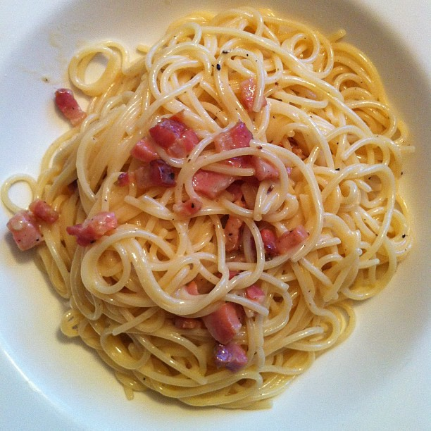

Main
Amerikaner |
Roast with Mustard Sauce |
Red Cabbage a la Oma |
Waffels
Spaghetti Carbonara

Description:
This recipie is another one of my favorites. It is so easy and usually takes only about 30 minutes to make. Ideal for a busy family!
Ingredients:
-
400 g Spaghetti noodles
-
100 g bacon or smoked ham
-
30 g butter or margarine
-
50 g ground parmesan cheese
-
3 egg yolks
-
100 - 150 ml heavy cream
-
splash of olive oil
-
salt and pepper
Steps:
-
Mix parmesan cheese, egg yolks, pepper, salt and cream in bowl or a salad shaker and set cream sauce aside.
-
Brown ham or bacon in butter and a little oil and keep warm.
-
Boil spaghetti noodles.
-
Drain but do not cool with water.
-
As soon as the noodles are drained, add the butter/ham mixture and the cream sauce.
-
Quickly mix and serve immediately on pre warmed plates.
(the sauce will thicken quickly if not served immediately).
Add a little extra heavy whipping cream if that happens as it will otherwise taste very dry.
-
Sprinkle with parmesan cheese as desired.
Enjoy!